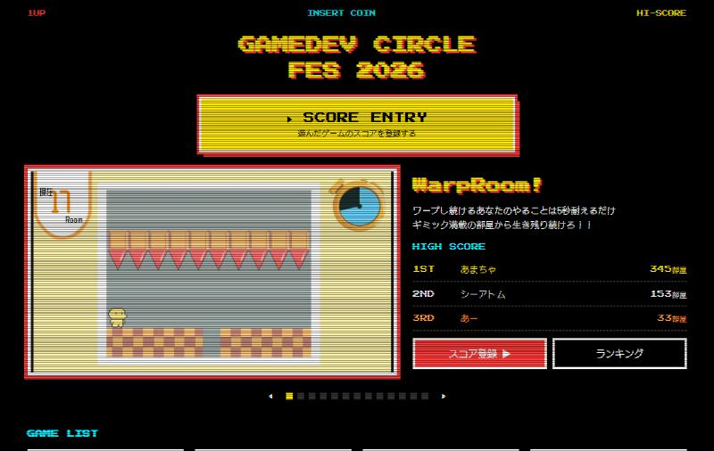
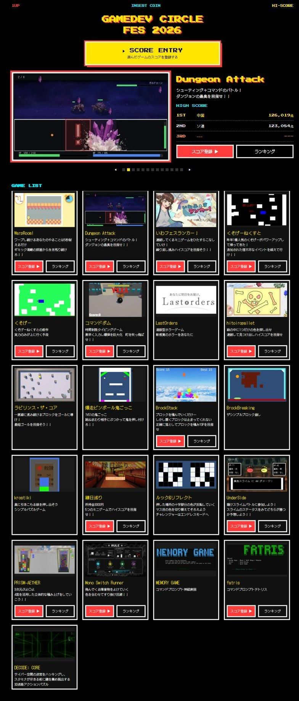
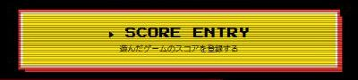
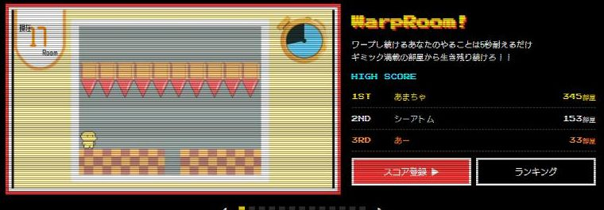
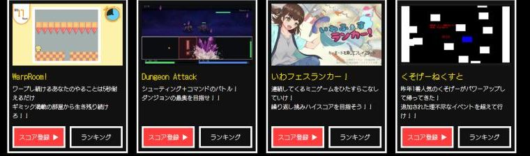
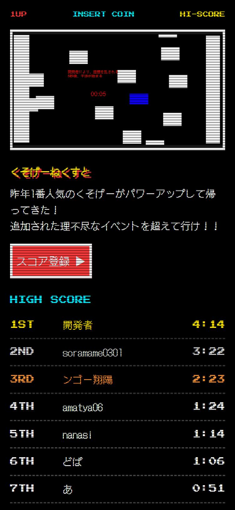
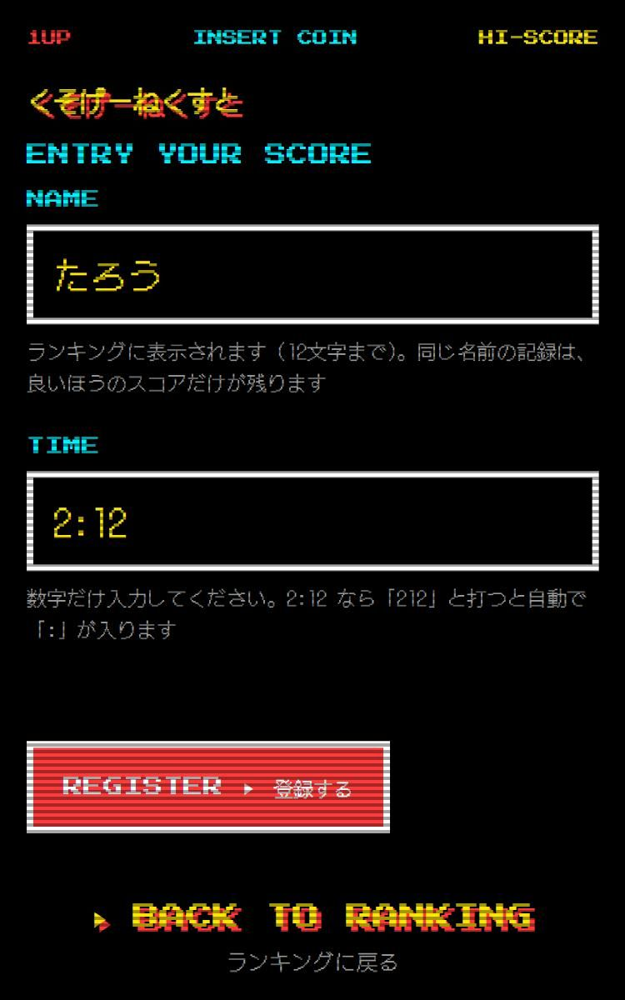
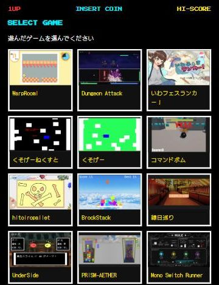

GAMEDEV CIRCLE FES 2026
ゲーム紹介と
ハイスコアランキング
松橋 玄英
情報科学専門学校 情報セキュリティ学科

gamedev-fes-2026.web.app
OVERVIEW
トップページ全体（上から下まで）
ランキングのあるゲームは13本
スマホ・会場のモニターの両方で使用
開発期間は本番前日の1日

OVERVIEW
1

トップの一番上。遊んだゲームを選んで、スコアを登録する入り口
2

13本の紹介とTOP3を、10秒ごとに自動で切り替え
3

全21本。ランキングのあるゲームには「スコア登録」「ランキング」
トップ 紹介とTOP3を10秒ごとに切り替え

ランキング

スコア登録
01
QRをスマホで読むか、展示PCのブラウザでトップを開く
02
トップの一番目立つボタンを押す

03
遊んだゲームを画像から選ぶ
04
名前とスコア。全員の画面にすぐ反映
ゲーム一覧の「スコア登録 ▶」からなら、03をとばしてそのゲームの登録画面へ直接進める
① ページを開く
ブラウザ
HTML・JS・画像を受け取る
Firebase Hosting
② ランキングを見る
ブラウザ
変わったら自動で届く
Firestore
③ スコアを登録
ブラウザ
直接書き込む
セキュリティルール
OKなら保存 → ②で全員へ
④ 管理する
管理画面
ログイン
Authentication
UIDをルールで確認
画面は HTML / CSS / JavaScript（ビルドなし）。データの守りは Google 側で動くセキュリティルールが担当
| 公開の方法 | 公開までの手間 | データベースとログイン |
|---|---|---|
| 自分でサーバーを用意 | 多い（OS・HTTPS・更新も自分） | 自分で用意して管理 |
| GitHub Pages | 少ない | 別のサービスと組み合わせる |
| Vercel / Netlify | 少ない | 別のサービスと組み合わせる |
| Firebase（採用） | 少ない（コマンド1つ） | 同じサービスでそろう |
ログインした人の UID がそのまま届くので、「管理者だけ修正できる」を確実に書ける
独自の書き方になるので乗り換えにくい。期限と規模を優先して選んだ
工夫 1
games / warp-room /
scores / あまちゃ
score: 345
achievedAt: 10/24 13:05
同じ名前は同じ記録を見に行くので、1人1件にまとまる。表示のたびの集計も不要
allow update: if
新しいスコア > 今のスコア
&& 日時 == サーバーの時刻
セキュリティルールで制限。読む→比べる→書くはトランザクションで1つの処理に
工夫 2
"name": "WarpRoom!",
"ranking": {
"enabled": true,
"order": "desc",
"format": "points",
"unit": "部屋"
}
ページはデータを読んで自動で並べる。並び順・表示形式・単位を分けたので、組み合わせを変えるだけ
2:12 → 132
スコアはすべて整数で保存（タイムは秒）。並べ替えが単純で誤差も出ない
工夫 3
役割：使いやすさ（回避はできる）
役割：安全（Google 側で動く）
画面を通さず直接書き込む攻撃を6種類試し、すべて拒否されることを確認
難しかったところ
症状
ゲームを追加して公開すると、あるPCだけトップがほぼ空。他の端末は正常
原因
ブラウザが古いJSを1時間キャッシュ。新しいHTMLと食い違いエラーに
対策
HTML・JSは毎回確認（no-cache）、画像は保存。種類ごとに分けた
学び
前に開いたことのある端末でも確認する。本番前に直せた
Firebase Hosting の初期設定：Cache-Control: max-age=3600（1時間は確認せずに使ってよい）
結果
23件
文化祭当日に登録された記録（ランキングのある13本中9本で登録）
これから（すぐできること → 長期）
games.json に項目を足し、ランキングと同じく1ページを使い回す
動画は重いので、動画サービスに置いて埋め込む
一番盛り上がったのはスコアが出ないゲーム。難しいモードの挑戦人数とクリア人数を表示する
長期
ブラウザで動く形（WebGL など）に書き出して公開する
GAMEDEV CIRCLE FES 2026
サイト gamedev-fes-2026.web.app
コード github.com/arukari0961730/iwasaki-gamedev-fes-2026